-
2018.04~2019.01 ときがわ町・無人本屋との出会い
-
2018.04 シェアハウス「まちんなか」誕生
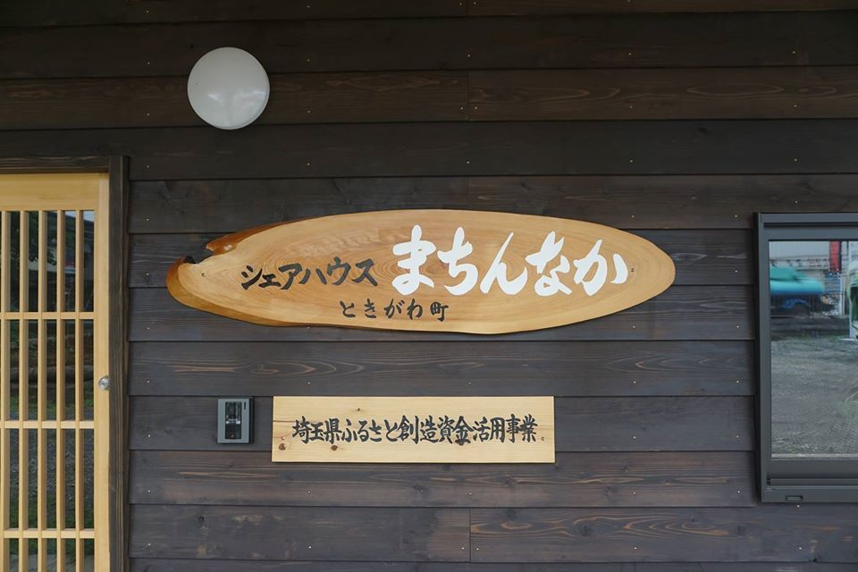ときがわ町は、移住定住、若者の流出防止、町内での起業支援促進および地域 活性化を推進するため、古民家を改修し個人が共同で協力し生活する施設としてシェアハウス 「まちんなか」を整備しました。
私を含め、徐々に県内各地から入居者が集まり、半年足らずで全６室が埋まりました。
地域の活性化に貢献すべく、６月頃からFacebookページ「ときがわ町シェアハウスまちんなか通信」 で生活ぶりや町の魅力等の発信を開始。
継続的な情報発信によって町への理解が深まり、地元民も移住者も温かい人ばかりのこの町を好きに なるまで、時間はかかりませんでした。
-
2019.01 無人本屋との出会い
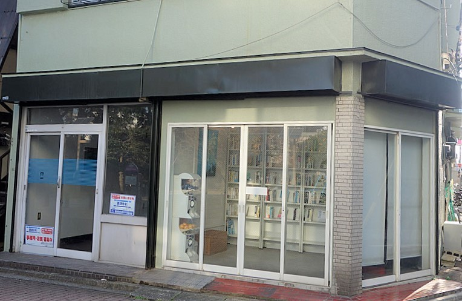ときがわ町に本屋がないと聞いたのと時を同じくして、東京都三鷹市にある無人本屋の存在を知りました。
「これが東京で成立しているのなら、ときがわ町でもやれるのでは？」 ２月には現地へ赴くと、その想いはより強くなり、実現に向けた行動を開始しました。
しかし、無人本屋のシステムをマネして始めるにしても、店舗や什器、商品の書籍等をそろえなくてはいけません。 当初から本屋を復活させることを最優先にし、ビジネスとして考えてはいませんでした。
出費は最低限の初期費用に抑え、ランニングコストも極力かけない形を模索。 そこで目を付けたのが、庭にあった蔵でした。
-
-
2019.03.18~2019.07.21 無人本屋を成立させるには
-
2019.03.18 本屋ときがわ町構想
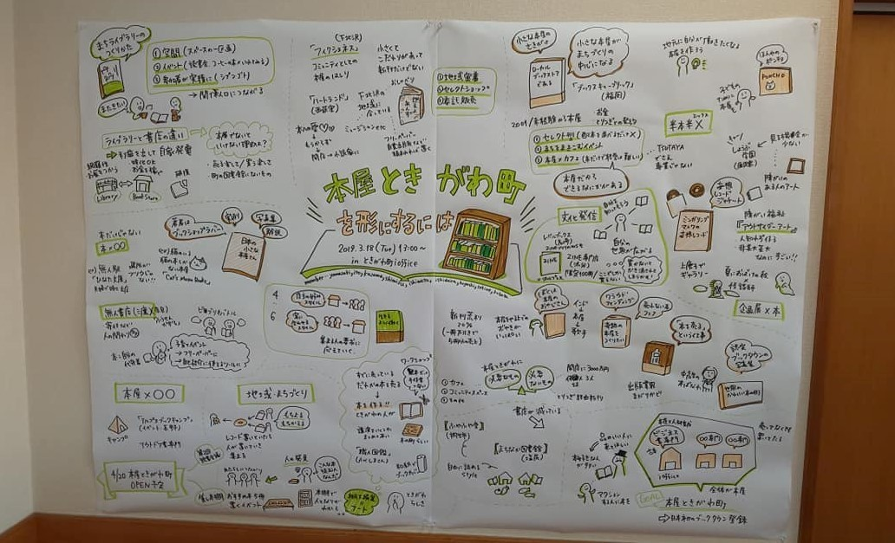ときがわカンパニーさん主催の「読書会議×グラレコ」に参加しました。 【本屋ときがわ町を形にするには？】というテーマで、まずは各自が持参した本屋に関する本を紹介しつつ、 本屋について深堀していきます。
以降、いくつかのワークショップに参加したり、実際に本屋さんへ足を運んだりして、 無人本屋の構想を練り上げていきました。
-
2019.07.21 実験店舗として出店
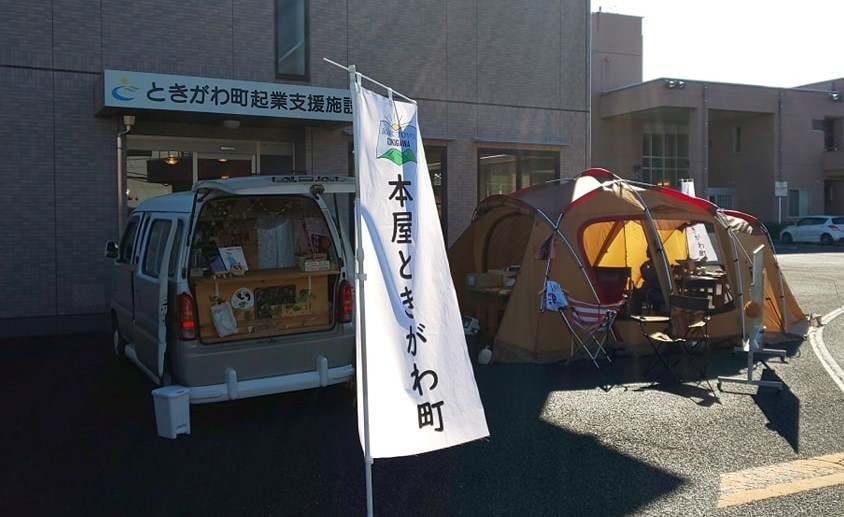第四回「本屋ときがわ町」へ初出店させていただきました。 まちんなかの蔵を使った無人本屋の実現に向け、本とガチャガチャを持参しての出店となりました。
この時は有人の店舗としていましたが、店主が席を外しているタイミング（＝無人状態）に購入された方がいました。 意図せず、無人本屋が成立した瞬間でした。
-
-
2019.11.30～2019.12.09 蔵から本屋へ内装準備
-
2019.11.30 大掃除
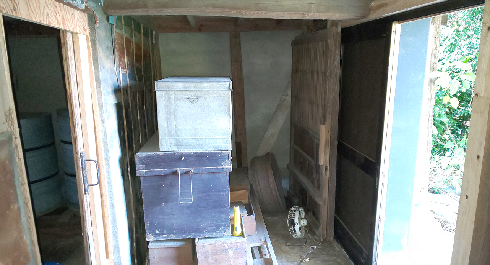蔵の中には昔の品々が箱に詰められ所狭しと保管されており、運び出すだけでも一苦労… お手伝いに数名の有志を募り、大掃除を決行！
木箱類は欲しい方にお譲りし、蔵の中にだいぶ余裕ができました。 また、奥側にある棚はそのまま活かすことに。
-
2019.12.09 備品、有人本屋から無人本屋へ
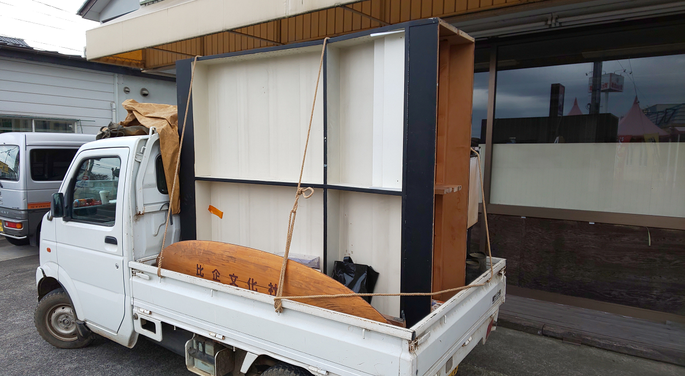東松山市で長年愛された本屋「比企文化社」さん。 惜しまれながらも十一月末で閉店することになり、なんと本棚等を譲っていただけることに！
かくして、知人が譲り受ける分と一緒に軽トラに乗せて東松山・ときがわを三往復… 様々なご縁に感謝し、有効活用することを誓いました。
本棚を譲り受けるに当たり、事前に下見に伺いました。 今思えば不思議なのですが、実際に蔵の中へ納まるかどうかの採寸等を一切していませんでした。
本棚はご主人のDIY作品とのこと。内心ドキドキしながら蔵へ運び込みましたが、見事に高さも幅もピッタリでした！ ありがたいことです。
蔵にぴったり収まりました
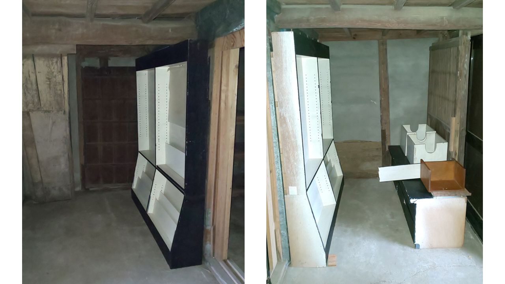
-
-
2020.02.02~2020.07.31 本を集める
-
2020.02.02 まちんなか玄関前にBOX設置
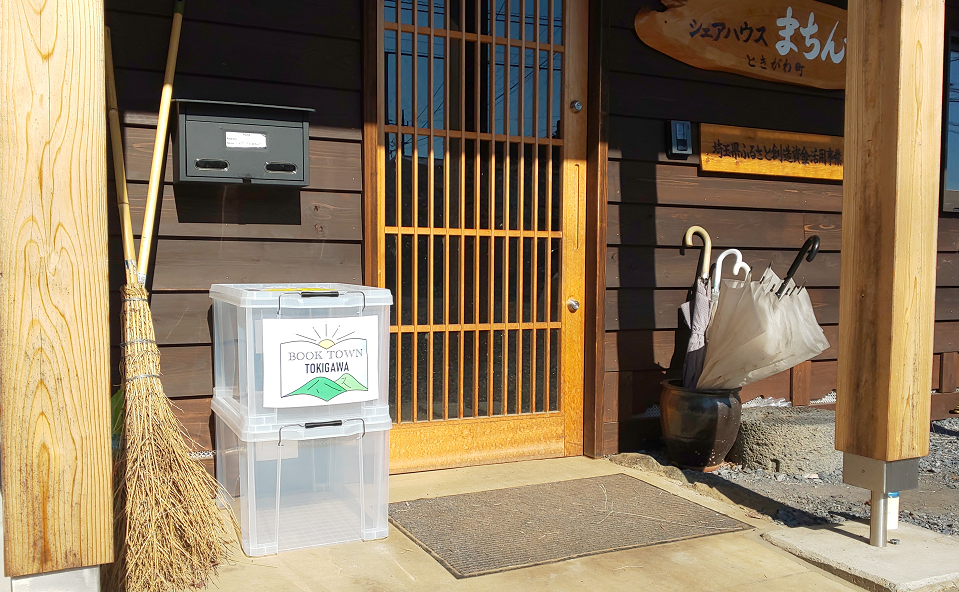フェイスブック上で本の寄付をお願いし、翌日には玄関前にBOXを設置。 開始に当たって必要な数を集めることが目的でしたが、様々な方からのご厚意であっという間に数百冊の本が集まりました!
ご自宅での引き取り依頼もあり、本以外にも色々品物をいただいたことも。
寄付のお願いを開始してから間もなく、町内のセブンイレブン（ときがわ町田中店）のオーナーさんからコーヒーの引換券をたくさんいただきました。
活用法を考えた末に、寄付してくれた方へのお礼に使わせていただくことに。 さらに店内にチラシとBOXまで置かせていただき、大変ありがたかったです。
コーヒー引換券を御礼に
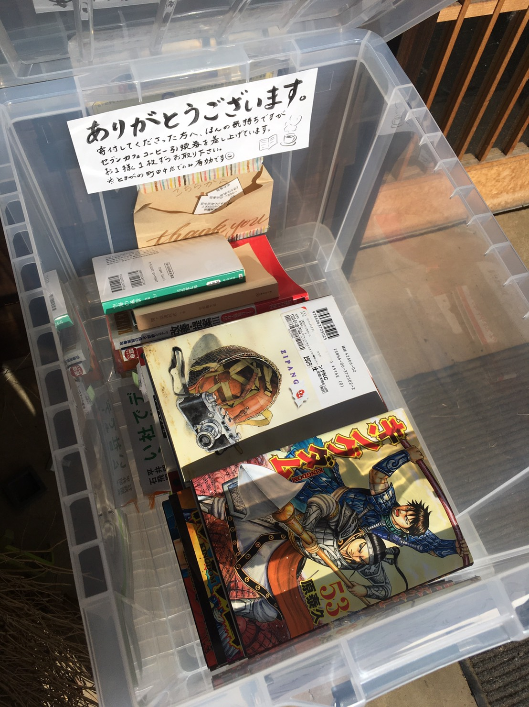 -
2020.05.17 本の仕分け
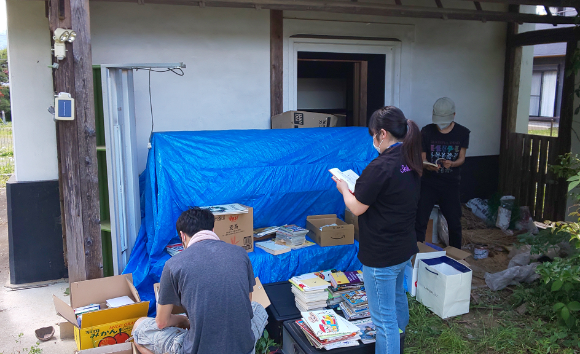春のオープンを目指していたところ、突如として世界は新型コロナウイルスの脅威にさらされました。
準備も一時中断になり、5月17日に本の仕分け作業を実施。
元の値段を目安に、需要や希少価値等をを考慮しながら改めて値付けしました。
-
-
2021.08.01 無人本屋くらんなか開店
これからもくらんなかをよろしくお願いします。
トップに戻る
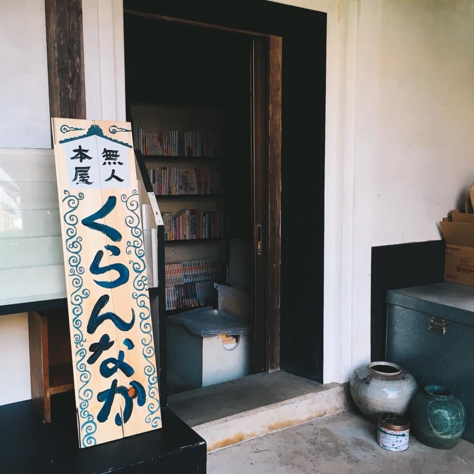
開店までの記録
居住地内の蔵を無人本屋にするまでの
運営者の記録です